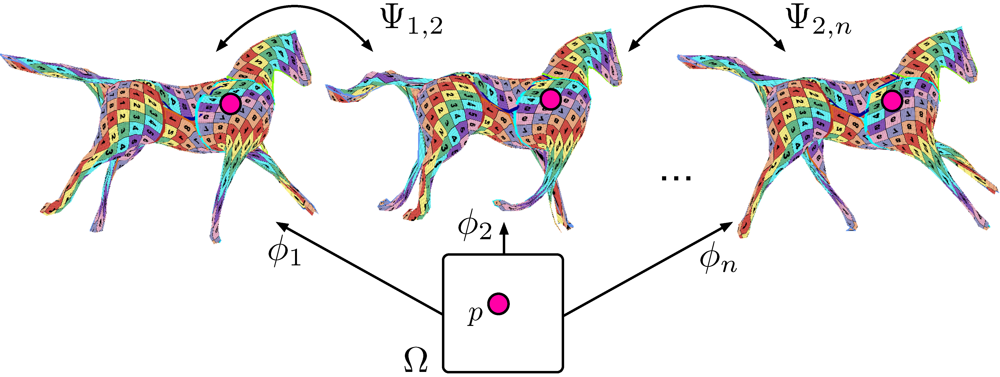

Surface Reconstruction
cia Metric-Consistent Atlases

Abstract
We propose a method for the unsupervised reconstruction of a temporally-coherent sequence of surfaces from a sequence of time-evolving point clouds, yielding dense, semantically meaningful correspondences between all keyframes. We represent the reconstructed surface as an atlas, using a neural network. Using canonical correspondences defined via the atlas, we encourage the reconstruction to be as isometric as possible across frames, leading to semantically-meaningful reconstruction. Through experiments and comparisons, we empirically show that our method achieves results that exceed that state of the art in the accuracy of unsupervised correspondences and accuracy of surface reconstruction.
Video
Method
We rely on the AtlasNet atlas-based representation [1] to model the surface underlying the 3D points. However, whereas in the original AtlasNet, any patch can correspond to any part of the surface, we enforce consistency of the patch locations through the whole sequence effectively creating a time-consistent atlas.
To learn atlases that are semantically and temporally coherent, meaning that each 2D point on each 2D atlas patch models the same semantic surface point over time, we require that our model predicts close-to-isometric deformation between a given pair of frames.
For this purpose we compute the Riemannian metric on the surface and require that it remains remains constant for any surface point as the shape changes. We translate this into a metric-consistency loss function, which, when minimized, implicitly establishes meaningful point correspondences. For details please see the paper and/or the video.
Correspondences defined between three surfaces by the mapping of one point through three different atlases.
Results
Some of the results produced by our method are shown below. For mode results please see the video.


Citing this Work
@inproceedings{bednarik2021temporally_coherent,
title = {Temporally-Coherent Surface Reconstruction via Metric-Consistent Atlases},
author = {Bednarik, Jan and Kim, Vladimir G. and Chaudhuri, Siddhartha and Parashar,
Shaifali and Salzmann, Mathieu and Fua, Pascal and Aigerman, Noam},
booktitle = {Proceedings of IEEE International Conference on Computer Vision (ICCV)},
year = {2021}
}
References
[1] T. Groueix, M. Fisher, V. G. Kim, B. Russel and M. Aubry. AtlasNet: A Papier-Mâché Approach to Learning 3D Surface Generation CVPR, 2018.